|
|||||||||||||||||||||||||||
|
|||||||||||||||||||||||||||
|
鍋倉山スキー |
| 開 催 日 | ２０１０年２月６〜７日 | |||
| リーダー | 平野裕也 | |||
| HP制作者 | 小林義亮 | |||
| 参加者数 | １２名 （会員１２名） | |||
| 昨年新しくデビューした鍋倉山スキー行。好評につき本年も「毛無山から七ケ巻」へのクラシックルートを追加して計画された。平野リーダーは張り切って２回の下見を行って本番に備えたが、一回目の下見は新年寒波で鍋倉山は数十メートルのラッセルに終わった。さて本番は？ |
| １日目 ２月６日（土） |
| 今回もまた今シーズン一番の寒気の襲来で高速道も通行止めが多い。東京出発組は渋滞を嫌って中央道を進んで、小布施のSAで１１時前に集合。ここで前夜発で野沢でスキーを楽しんでいたKさん達からのゴンドラが次々とストップしているとの情報で、誰言うまでもなく長野県唯一というミシュラン二つ星の宿の温泉を楽しみに宿へ進んだ。 |
| 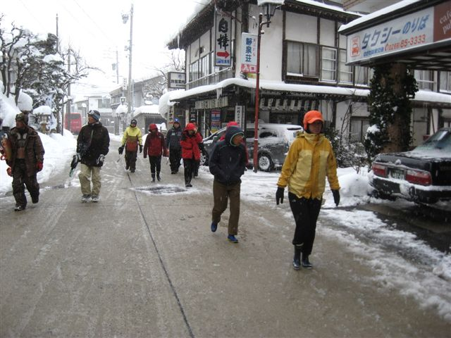 | A | 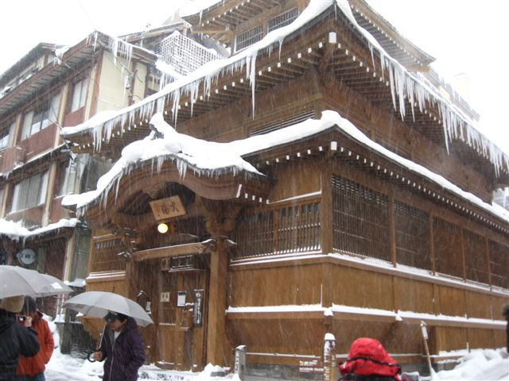 |
| 宿に荷物を置いてソバや探しの難民状態。ゲレンデ閉鎖のためどこも満員で雪の温泉街をウロウロ。 | 有名な外湯巡りの象徴、大湯。宿はこの右横にある。 |
| 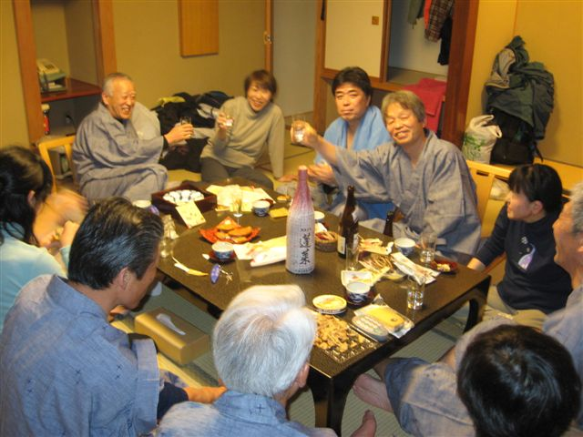 | A | 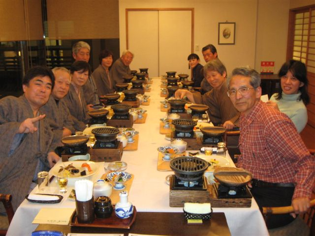 |
| 夕食の前からこの状態 | 料理は一流。さあこれで明日のツアーの活力は十分 |
| ２日目 ２月７日（日） |
| ７日は雪も小康状態で風も弱くなったので予定通り鍋倉山へ向かう。野沢温泉から千曲川の対岸に延びている山並みの最高峰鍋倉山は昨シーズンにデビューした新しいエリアだが、好評につき今年も計画されたものである。 天候は小雪だが風は弱くなった。予報では午後からは回復するとのことで、昨夜のアルコールはすべて発散させて勇躍車を飛ばす。そこには北海道に劣らぬフカフカのパウダーが待っていた。 |
| 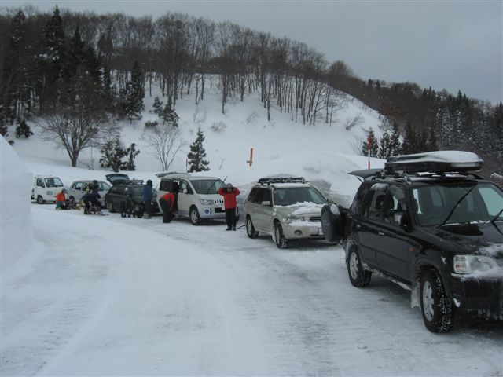 |
| 除雪道路最奥にはすでに多くの車が駐車していた。一般には知られていないエリアだが、これから人気が出るだろう。積雪は２メートル以上、昨年とは較べものにならぬ程多い。 |
| 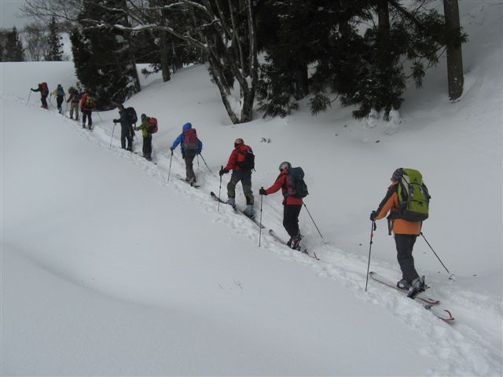 |
| 積雪が多いので林道を巻かないで畠の中を直登していく。斜面を急登して３０分ほどで雪原に至る |
| 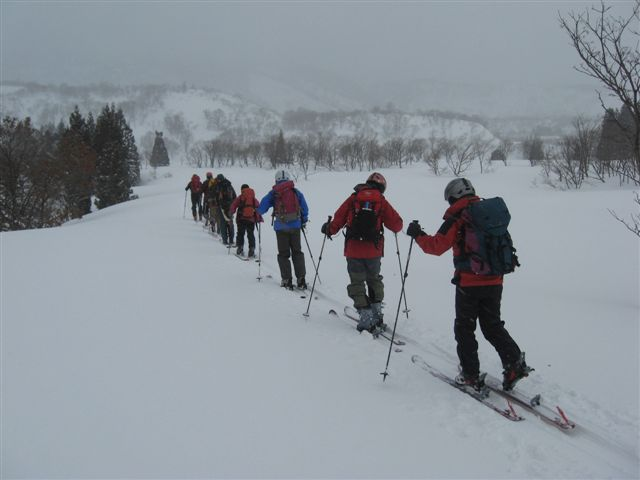 |
| 雪原を２０分ほど進むと半分雪に埋もれた田茂木山荘、この先から尾根にとりつき急登となる |
| 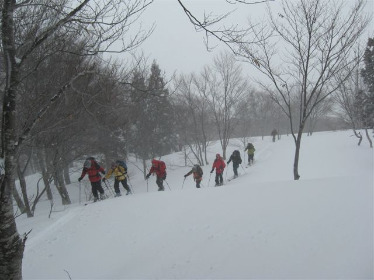 |
| 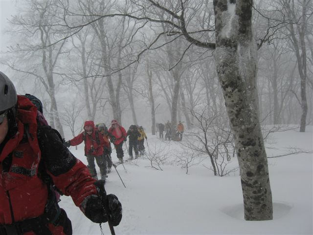 |
| 急登１時間足らずで比較的緩やかになって、ブナ林が拡がる。登るにつれて大木が増え、幻想的な墨絵の世界である。 |
| 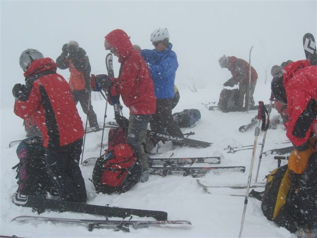 |
| 山頂は強風が巻き、横殴りの雪。休みにもならないのでシールを外して集合写真を撮って早々と滑降に入る。 ブナの大木の褥はフカフカ。歓声がこだまする。HP制作者も役割を忘れて一気に斜面に飛び込み、写真を撮るコトを忘れてしまっていたので、残念ながらメンバーの滑降の様子が一枚も撮られていない。 |
| 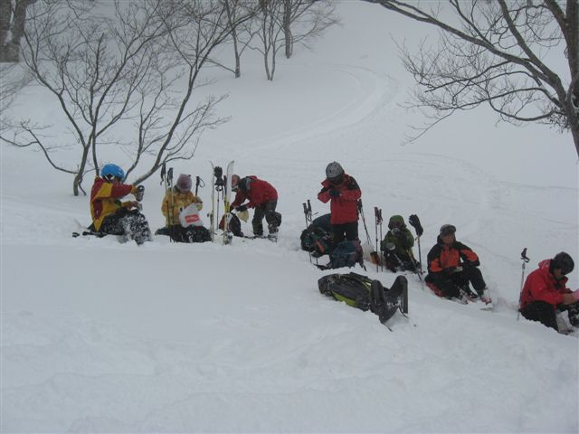 |
| 急斜面を下ったところで休憩タイム。緊張もほぐれて余韻に包まれてホッとする一時。 |
| 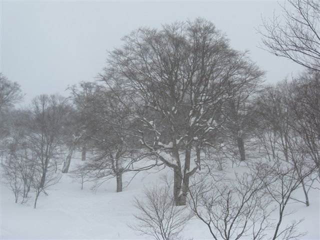 | 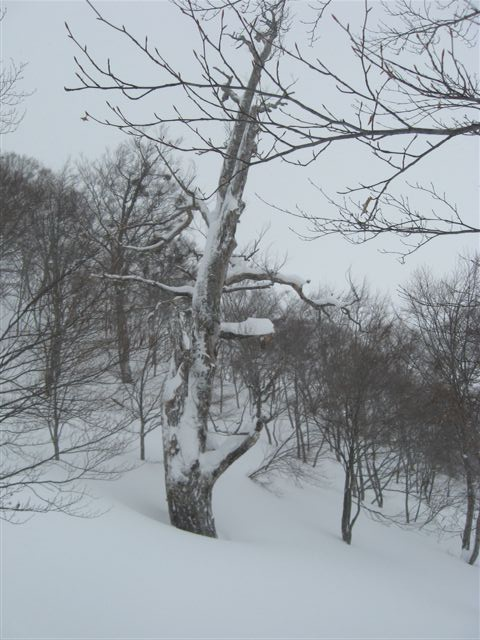 |
| 丁度休憩場所には鍋倉山を代表するブナの巨木、ブナ太郎（左）とブナ姫（右）がある。雪を纏った太郎は堂々たる容姿であるが、姫は残念ながらその容色を失っている。古武士然とした（右）と繊細な枝をひろげ、春夏秋冬、それぞれに優雅な姿を見せるであろう（左）を見比べると左右逆の方がその名にふさわしい感じがする。 |
| 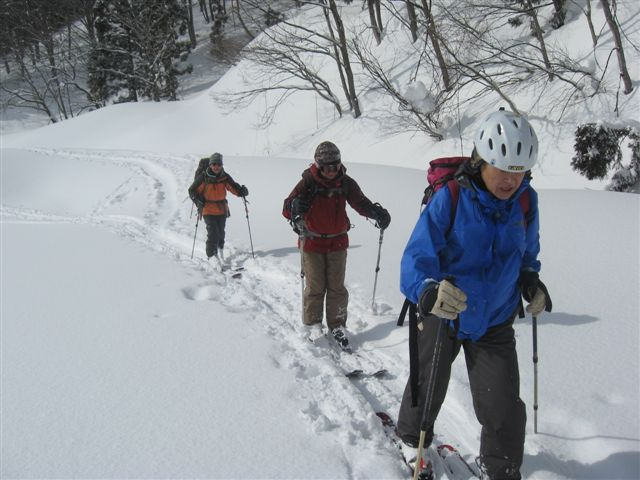 |
| 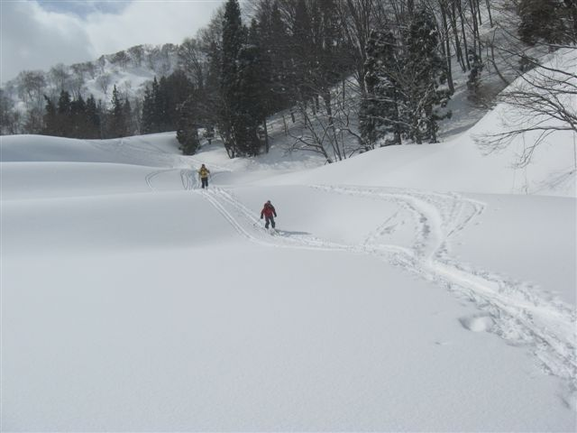 |
| アッという間に田茂木山荘に着いて、後はノンビリと余韻に浸りながら駐車場所に下りるのみ。太陽が顔を出してきた。 |
| 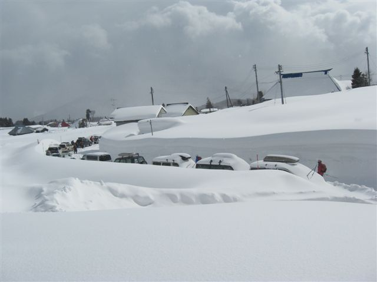 |
| 車の背丈より高い積雪。昨年は３０センチほどだった。 |
| 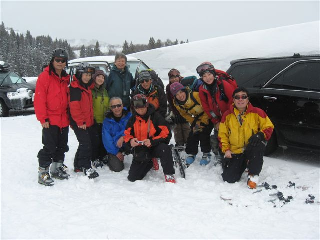 |
| 山頂の集合写真はお面をかぶっているため誰が誰か分からないので、改めて笑顔の集合写真を撮った。ここで解散して、皆戸狩温泉で汗を流して帰路に向かった。 |
| 軌 跡 図（上が滑降軌跡） |
| コ ー ス タ イ ム |
| ９：０５ | 温井部落出発 |
| １０：００ | 尾根とりつき |
| １１：３５ | 山頂 |
| １１：４０ | 滑降開始 |
| １２：４０ | 駐車場所へ |